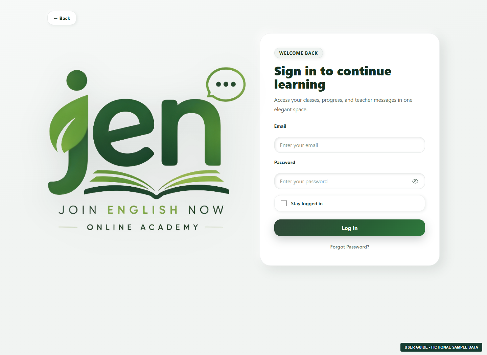
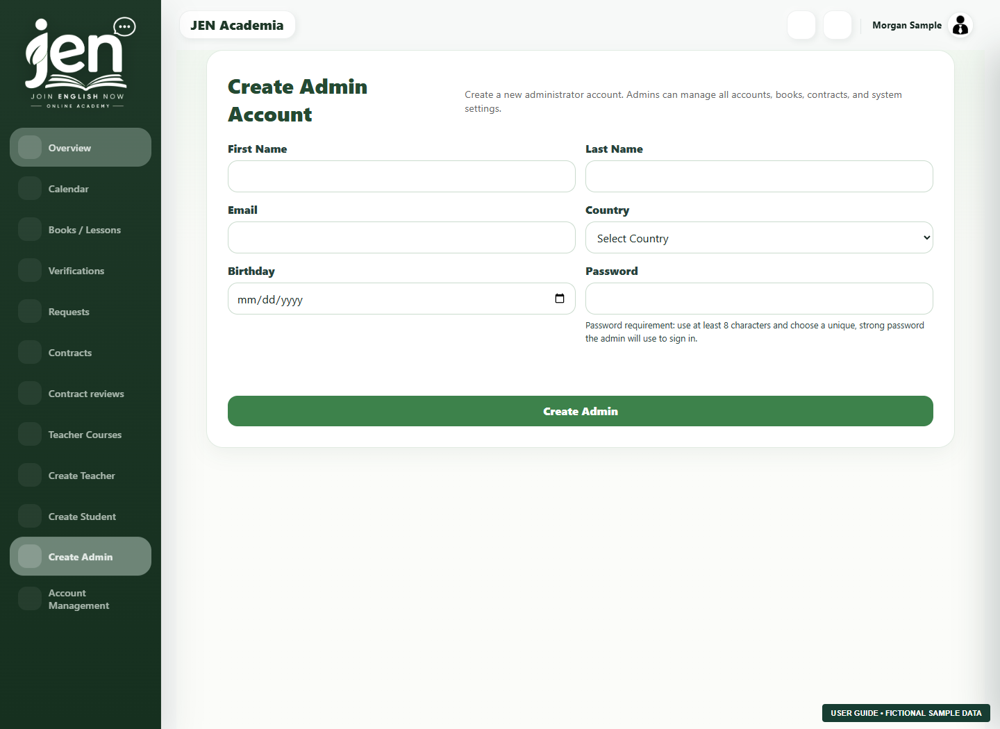
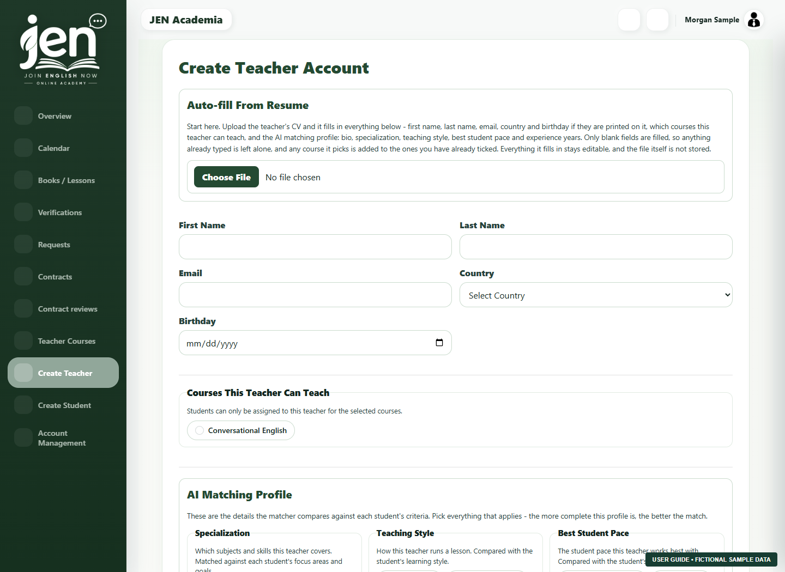
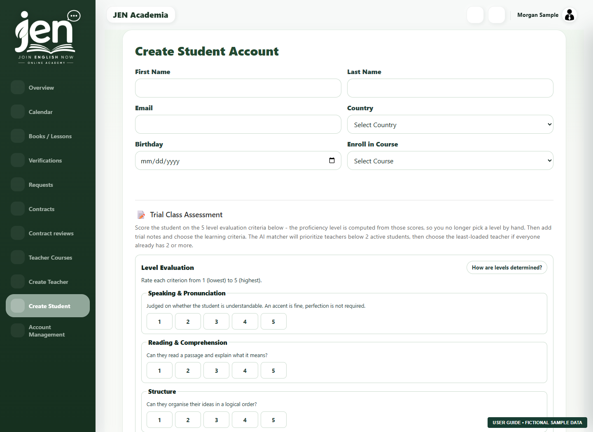
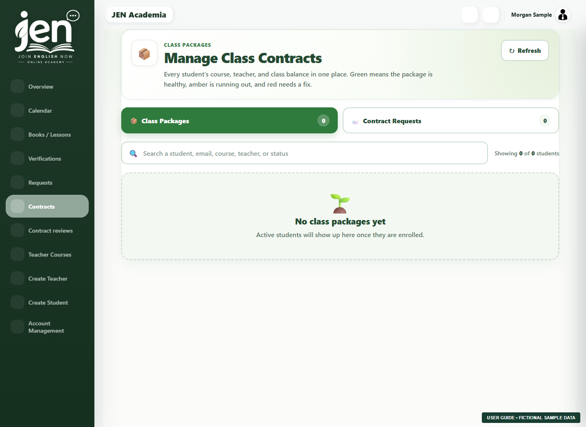
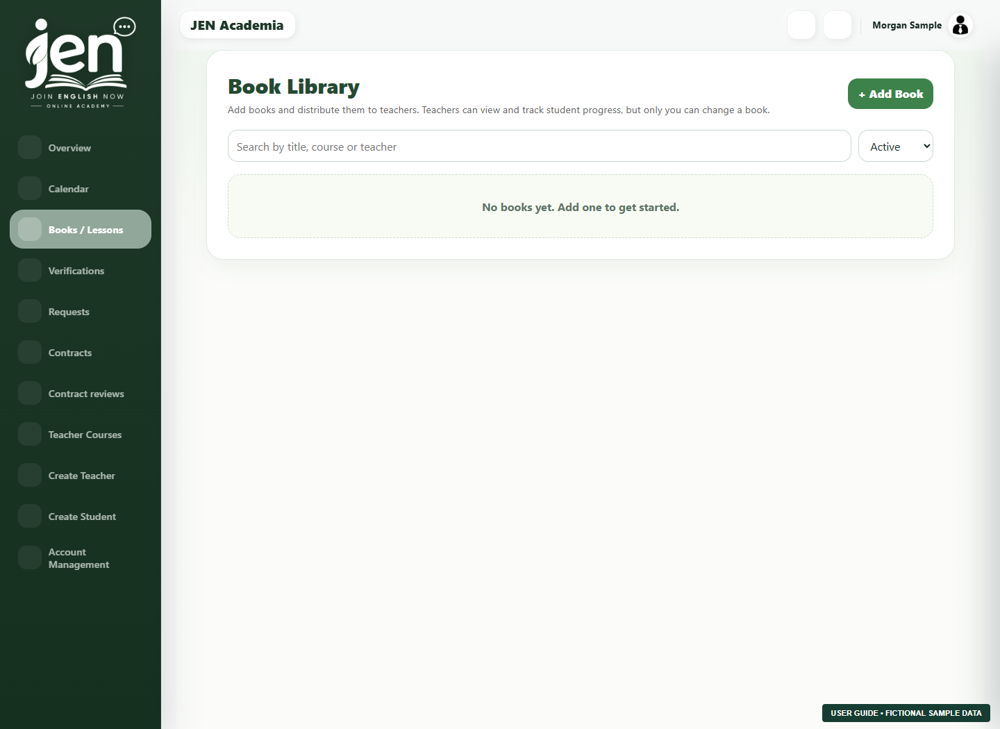

Download the printable PDF · All role manuals
Super administrator
User Manual
Clear instructions for every stage.
Prepare. Follow the steps. Check the result.
Start here
Use JEN Academia to manage school accounts, contracts, class evidence and the shared learning library.
This manual is for super administrator. Read Getting access first, then use the contents to find the task you want to complete. Each task gives preparation, numbered actions and a result to check. Bold words identify on-screen labels or important fields.
Use a current desktop or mobile browser, a reliable internet connection and access to your registered email. For online lessons, use a microphone, speakers or headphones, and a camera when needed. Allow meeting pop-ups and grant microphone/camera access when your browser asks.
| Where to go | What you do there |
|---|---|
| Overview / Calendar | School priorities and schedules. |
| Create Teacher / Create Student | Onboarding and initial learning setup. |
| Account Management / Teacher Courses | Access, invitations and course eligibility. |
| Contracts / Requests / Verifications | Package decisions, monitoring and evidence review. |
| Books / Lessons / Contract reviews | Library, progress and closing reports. |
| Create Admin | Create ordinary administrator accounts. |
Edition 2.0 • 16 November 2026. This guide follows the current project interface. School-specific availability, prices, contact details and enabled integrations may vary. Pictures are locally rendered interface examples with fictional data; workflow diagrams explain sequences rather than reproduce screens.
Getting access and signing in
Activate your account, enter the correct workspace, and recover access when needed.

An authorized administrator supplies your account. Super administrators create ordinary administrator accounts with an initial password. Receive those credentials through a private school-approved channel and change the password after your first sign-in.
Sign in
Before you begin: Have your registered email and password ready.
- Open the school website and choose the sign-in option.
- Type the full registered email address and password. Use the eye control if you need to check the password, and hide it again afterward.
- Select Stay signed in only on a device you control. Submit the sign-in form once and wait for the response.
- Confirm you reached your administration workspace. If Account setup or a required review appears, complete it before continuing.
Check your result: Your role-specific navigation is visible.
If you need help: Repeated failed passwords can temporarily lock the account; the default is five failures followed by a 15-minute lock. Wait or use password recovery. A new successful login can end an earlier session on another device.
My Account and password recovery
Keep your profile and timezone correct before you schedule or attend lessons.
Complete or update your profile
Before you begin: Sign in and open Account from your account menu. First-time users may be sent here automatically.
- Review your name, country, birthday and timezone. Enter the required personal details shown by the setup steps.
- Choose the timezone where you will attend or teach. Compare it with a known local time before saving.
- If you want a profile photo, choose an image or use the camera where supported. Crop, reposition and zoom, then preview the result.
- Save the changes. Enter your current password if sensitive changes require confirmation.
- Reopen Account and check that the changes were saved. Return to your Home or Overview page.
Check your result: Your saved profile is visible, and required setup no longer blocks navigation.
If you need help: Email and existing phone information are read-only here. Ask an administrator to correct your email. Photo sources may be JPG/JPEG, PNG, WebP or GIF, up to 10 MiB before processing; the processed server upload is limited to 2 MiB.
Change a known password
Before you begin: You know your current password.
- Open the password-change section in Account. Enter the current password.
- Enter a new password of at least eight characters and repeat it in the confirmation field. Keep it within the form limit; the server maximum is 72 UTF-8 bytes.
- Save and wait for confirmation. If the current password is rejected, correct that field and try again.
Check your result: The password change succeeds. Use the new password next time you sign in.
Recover a forgotten password
Before you begin: You can receive mail at the registered email address.
- From sign-in, open Forgot password. Enter your email and send the request.
- Check your inbox and spam folder. The on-screen response stays general even if an address is unknown.
- Open the newest reset email within one hour. Enter and confirm a new password, submit, then sign in again.
Check your result: The new password works.
If you need help: Reset links are single use and newer requests invalidate older unused links. If no email arrives, ask the school to confirm your account email and mail delivery.
Create an administrator
This privilege is available only to a super administrator. New administrators do not inherit it automatically.

Create an ordinary administrator account
Before you begin: Confirm authorization, correct identity details and a private way to deliver the initial credentials.
- Open Create Admin. If it is absent, check that you are using the intended super-administrator account.
- Enter name, unique email, country and birthday. Choose a unique strong initial password with at least eight characters.
- Review the identity and intended administrator role, then submit the form once.
- Verify the account exists in Account Management. Deliver the initial credentials privately using the school’s approved process.
- Ask the new administrator to sign in, complete any required profile fields and change the initial password in Account.
Check your result: An ordinary administrator can sign in with their own credentials.
If you need help: This form uses an initial password rather than student/teacher invitation setup. If creation appears to fail, search for the email before repeating it.
Overview and daily priorities
Start with items that affect access, classes and unresolved decisions.
Run the daily administration check
Before you begin: Open Overview after signing in.
- Review account/student/teacher totals and the Needs Attention items. Open an item to reach its management page.
- Check today’s timetable and recent class-status trend. Investigate unresolved verification records rather than assuming every past class is completed.
- Review ending contracts, low balances and learners without an assigned teacher. Contact the relevant participants as needed.
- Check pending contract decisions, setup/invitation problems and automatically archived accounts.
- Return to Overview after decisions and confirm that the relevant counts/attention items update.
Check your result: You have identified the day’s access, scheduling and contract priorities.
Create a teacher account
Create the teaching profile and course eligibility, then verify invitation delivery separately.

Onboard a teacher
Before you begin: Obtain verified contact details and the teaching profile through the school’s onboarding process.
- Open Create Teacher. Enter name, unique email, country and birthday.
- Select the supported courses. Enter specialization, teaching style, preferred student pace, years of experience and useful teaching bio/notes.
- Set whether the teacher teaches children. Confirm this with the teacher; it affects matching for students aged 12 or younger.
- If using resume assistance, upload a PDF, DOCX or TXT file up to 8 MiB. Inspect every parsed field and correct it before continuing.
- Review the creation confirmation and submit once. Read both the account-creation result and the invitation email result.
- Find the account in Account Management and check setup state. If email failed, resend or copy a fresh invitation after confirming the address.
Check your result: The teacher account and course assignments exist, with a usable setup invitation.
If you need help: Resume parsing assists entry; it does not create an account or verify credentials. An email delivery failure can happen after account creation succeeds, so check for the existing account before trying again.
Create a student and match a teacher
Use trial results and learning needs to select an eligible teacher and initial package.

Record assessment and create the account
Before you begin: Have the student’s identity, email, trial assessment, learning preferences and agreed package details ready.
- Open Create Student. Enter name, unique email, country, birthday and course.
- Score all five trial criteria from 1 to 5: Speaking & Pronunciation; Reading & Comprehension; Structure; Sentence / Grammar; Vocabulary. Inspect the computed level.
- Record goals, focus areas, learning styles, pace and trial notes. Add preferred weekdays/time range when known.
- Run the available matching assistance. Compare eligible teachers, explanations, published availability and load/schedule warnings.
- Select the teacher. Confirm the course match and suitability for children aged 12 or younger.
- Set the initial package: 10, 15 or 20 classes, with 25- or 50-minute duration. Review the student, teacher, assessment and warnings in confirmation.
- Create once, then check account/profile/package creation and invitation delivery. Find the account and contract to confirm saved details.
Check your result: The student has an account, assessment, assigned teacher, initial package and setup invitation.
Manage account access and invitations
Locate the right account before correcting email, renewing setup access or changing status.
Correct an email or renew setup access
Before you begin: Open Account Management and search identity/email/role.
- Open the matching account and inspect its role, active/archive status, profile completion, invitation state and expiry.
- For an incorrect email, enter a valid unique replacement through the email correction control and save.
- For incomplete student/teacher setup, resend the invitation or generate/copy a fresh setup link. Use the copy fallback if the browser cannot copy automatically.
- Share setup access only through the school’s private approved channel. Confirm the user received the newest link.
- Check the account again after setup. A completed account uses its corrected email for normal sign-in and recovery.
Check your result: The correct address and invitation status are visible.
If you need help: Archived accounts cannot receive setup invitations. Replacing an email for an incomplete account invalidates old unused invitations. A completed account does not need its old setup link.
Archive or restore an account
Before you begin: Review pending commitments, learner assignment and school retention requirements.
- Find the active account and choose archive. Read the confirmation, verify identity and confirm.
- Check the archived list. The user loses normal sign-in/access; account data is retained.
- To restore, locate the archived account, inspect any dormancy reason/date and use restore. Confirm the account is active.
- If a teacher was archived, check learners requiring reassignment and resolve their teaching/contract setup.
Check your result: The intended account status is saved.
Maintain teacher course assignments
Course eligibility controls matching and teaching; book distribution is managed separately.
Update a teacher’s courses
Before you begin: Open Teacher Courses. Confirm the change with the school.
- Search for the teacher and inspect the current course assignments.
- Select the supported courses the teacher should be eligible to teach. Review any child-teaching setting offered by the supported controls.
- Review and save. Reopen/search the teacher to confirm the assignments.
- Check any affected learner assignments and matching results. If the teacher also needs materials, assign those separately in Books / Lessons.
Check your result: The teacher’s course eligibility matches the intended teaching scope.
Monitor school schedules and reschedule requests
Inspect participant schedules and request outcomes without taking the participant’s decision role.
Inspect a scheduled class
Before you begin: Open the administration Calendar.
- Navigate to the relevant month/date and use the available participant/date filters.
- Open the class and check student, teacher, course, date/time, duration, meeting link and status.
- If investigating attendance, open the related verification record and compare the recorded events.
- Communicate the finding to the participants using school support channels.
Check your result: You have located the correct class and its current recorded state.
Monitor or remove a request record
Before you begin: Open Requests and filter/search the relevant participant or outcome.
- Read the original schedule, proposed schedule, requester’s reason, response/decline reason and resolution time.
- For a pending request, direct the other participant to approve/decline it. The monitoring screen does not decide for them.
- If removing an eligible request record, choose its delete/remove action, confirm the exact record and recheck the list.
Check your result: You understand the request outcome or have removed the intended record.
Inspect and edit class contracts
Review totals, usage, reservations and expiry before changing a package.

Review or correct a contract
Before you begin: Open Contracts and the package list.
- Search/filter by student, email, course, teacher or status. Open the intended package.
- Check total, used and remaining classes; lesson duration; creation/expiry dates; status; and any reserved allowance.
- Use the edit action for supported course, eligible teacher, 25/50-minute duration, totals, usage or status changes. Record the reason through school procedures.
- Keep used classes within total classes. Check the calculated remaining balance and intended Active, Expired or Cancelled state.
- Save and reopen the record. Compare the displayed balance/status with the intended correction and any existing reservations.
Check your result: The intended contract fields are saved, with a consistent remaining balance.
| Balance concept | Meaning |
|---|---|
| Unused | Total classes minus used classes. |
| Bookable | Unused classes after qualifying unresolved reservations are held. |
| Original package | The package attached to the booking; later completion/rescheduling refers back to it. |
Decide new-contract and extension requests
Read the latest revision and apply the correct package outcome.
Decide a new-contract request
Before you begin: Open Contracts and its contract-request section.
- Filter Pending and open the request. Check student, course, requested count/duration, teacher/preferences, notes and current package.
- Review revision history so you decide the latest request. Confirm any school payment arrangements outside the application.
- Use approval or decline and provide the administrative response where offered. Check all course/teacher/package choices before confirming.
- Wait for the result. For approval, inspect the newly created replacement package and applied teacher/course/profile decisions.
- Confirm that the request outcome and administrator response are recorded.
Check your result: Approval creates the replacement package; decline leaves an explanation in request history.
If you need help: A new contract does not automatically transfer unused old credits. Do not promise a transfer based on the request form.
Approve an extension of an ended package
Before you begin: The referenced ended contract still has unused classes.
- Open the extension request and verify the referenced existing package and remaining allowance.
- Choose a future end date in the extension approval dialog. Review the student’s reason and intended deadline.
- Approve and check that the same package is active with its new end date, unchanged total and unchanged usage.
- Decline with context if ineligible. Archive resolved requests only when they no longer need to remain in the active list.
Check your result: An approved extension preserves package identity and unused credits while extending time.
Review attendance and class evidence
Resolve exceptions using attendance facts and the original booking’s package.
| Automatic evidence requirement | Value |
|---|---|
| Shared duration | 15 minutes for a 25-minute class; 30 minutes for a 50-minute class. |
| Start screenshot | After both are present and within five minutes of that moment. |
| Screenshot mode | Separate start and end proof, with teacher start, student attendance, teacher end and valid summary. |
| Recording mode | Required recorded duration plus the applicable attendance/start/end conditions. |
Approve or mark incomplete
Before you begin: Open Verifications and find the class by participant, class, date and status.
- Open/read the record. Check teacher start, student attendance, teacher end and shared attendance duration.
- Review summary, evidence mode and exception reason. Open the start/end screenshots or available recording.
- Check the original package and remaining allowance. For a group, inspect each student’s record independently.
- Choose the supported approval action when the evidence merits completion, or mark incomplete when appropriate. Review and confirm the decision.
- Reopen the record and check verification state, class outcome and original-package usage.
Check your result: The class is resolved and its original-package credit decision is reflected. Repeated approval must not charge again.
Clean up finalized verification records
Evidence cleanup is distinct from deciding whether a lesson was completed.
Remove an individual record or clear finalized records
Before you begin: Follow the school’s evidence-retention policy. Open Verifications and confirm the relevant outcomes.
- For a single deletion, locate the precise class/participant record and inspect its evidence before using remove.
- Read the confirmation and confirm only the intended record. The record and its associated unshared uploaded evidence are removed.
- For bulk cleanup, use the finalized-record cleanup action only after reviewing which Verified/Incomplete records it targets.
- Check that Pending/Admin Review items remain for decision and that the intended finalized records were cleared.
Check your result: The targeted verification/evidence records are removed; unresolved review items remain.
Create and distribute books
Maintain the shared library and grant teachers the correct course materials.

Add a book and assign teachers
Before you begin: Open Books / Lessons. Have the title, course, description and optional cover ready.
- Use the add/create book control. Enter title and course, plus the optional description.
- Choose an optional JPG/JPEG, PNG or WebP cover up to 5 MiB.
- Select the teachers who should receive access. Review title, course and distribution before saving.
- Search for the saved book and open it. Confirm metadata and assigned teachers.
Check your result: The book is saved and distributed teachers can access it; eligible students inherit access through teacher/course.
Change distribution or archive a book
Before you begin: Search the book by title, course or teacher.
- Use edit to change metadata/cover, or the teacher-assignment control to change distribution. Review before saving.
- To hide a book while preserving lessons/progress, archive it through its confirmed action.
- Use the archived view/status filter to locate and restore it when appropriate. Verify the final state.
Check your result: Metadata, distribution and archive state match the intended access.
Upload lessons and inspect student progress
Organize usable lesson files and check learning records without treating reading progress as assessment.
Upload a lesson into a book
Before you begin: Open the correct book’s content page from Books / Lessons.
- Use the lesson upload/add action. Enter the lesson number/order, title and useful notes/description.
- Choose a learning file within the 10 MiB limit. The upload screen offers PDF, DOC, DOCX and TXT.
- Review the book, lesson ordering and file. Upload and wait for confirmation.
- Reopen the lesson and check its details and supported viewer/open-file action. Confirm that the material is readable.
Check your result: The lesson appears in the correct book with its notes and file.
If you need help: RTF also has backend support, but use the formats offered by the current interface. If a format cannot preview, check the offered fallback before distributing it.
Inspect progress or remove a lesson
Before you begin: Open the intended book.
- Open Students Progress. Locate the student and inspect completed/total lessons, percentage and per-lesson state.
- Compare progress with teacher assessment when planning support; reader completion alone does not establish learning.
- If an individual lesson must be removed, identify its number/title, use delete and read the confirmation carefully.
- Recheck the lesson list and consult affected teachers when changing an active course’s materials.
Check your result: You have inspected the intended student record or removed the exact lesson.
Read closing contract-review reports
Administrators can inspect both private review sides and their completion states.
Find and inspect a report
Before you begin: Open Contract reviews.
- Search by student, teacher, course, level or status. Use complete/awaiting-teacher/awaiting-student filters as appropriate.
- Check which side is missing; some records may await both. Review the summary counts and average teacher ratings.
- Open the full report. Read the teacher’s five proficiency scores, computed level and comments.
- Read the student’s five teacher-rating scores, average rating, comments and submission dates.
- Follow up privately with the participant whose required review is pending. Preserve the confidentiality of both sides.
Check your result: You can identify missing reviews and interpret the final report without confusing it with per-class feedback.
Notifications, messages and safe sign-out
Use notifications for task updates and chat for direct communication.
Read and act on notifications
Before you begin: You are signed in.
- Open the notification bell. Check unread items first or use filters such as New times, Homework, Teacher notes, News and Reminders.
- Open an item to see its related class, assignment, book or request. Check the date, timezone and people before acting.
- Use the available read controls to mark an item or all items read. Remove items you no longer need; use clear-all only after checking the list.
Check your result: The relevant page opens and unread indicators update.
If you need help: A removed notification does not undo the class, submission or decision it describes. If an old availability link no longer opens, check Calendar for current availability.
Send a direct message
Before you begin: Choose an appropriate school contact.
- Open the chat launcher and search the contact list. Administrators can find eligible school users.
- Select the intended contact. Check the name before typing a clear message about the class or support issue.
- Send the message once. Check that it appears in the conversation. Read receipts and presence indicators provide additional context when available.
- Use Load older when you need earlier messages. Minimize a conversation to keep working, then restore it from its minimized control.
Check your result: Your message appears in the correct conversation.
If you need help: On phones, one conversation window is shown at a time. If sending fails, check your connection and account/profile status, then reopen the conversation before retrying.
Finish your session
Before you begin: Save drafts and confirm any submitted changes first.
- Close meeting tabs when lessons have ended. Open the account menu and choose the sign-out option.
- Confirm the sign-in page appears. On a shared device, close the browser after signing out.
Check your result: Protected pages require sign-in again.
Troubleshooting and support
Use the symptom to choose a next action. Preserve the exact message when reporting an issue.
| Problem | What to do |
|---|---|
| Cannot sign in | Check your full email, password and keyboard settings. Wait if temporarily locked; use password recovery. Ask the school about archived accounts. |
| Setup or reset link fails | Open the newest email. Ask for a fresh setup invitation or request a fresh password reset; older links may have expired or been replaced. |
| Sent back to Account or Contract reviews | Complete the required profile, closing review before continuing. |
| Times look wrong | Compare the timezone in Account and the timezone shown in the class details. Correct the profile timezone and reopen Calendar. |
| A page or upload does not finish | Check connectivity, file format and file size. Confirm whether the action succeeded before retrying. Reopen a stale protected file link from its source page. |
| Account exists but invitation failed | Confirm the saved account and correct email. Resend/copy a new setup invitation instead of creating a duplicate. |
| No suitable teacher recommendation | Check course eligibility, profile completion, active status and child suitability. Review schedule warnings and published availability. |
| Student has credits but cannot book | Inspect original-package expiry and unresolved reservations. Resolve the affected class records before changing totals. |
| A completed class needs correction | Review its verification and original package. Use the supported outcome decision; deleting evidence alone does not reverse credit usage. |
Report a problem clearly
Before you begin: Use school contact information from the website or an available administrator chat.
- Record the affected page, the action you tried, the exact error message, and your local date/time and timezone.
- Include the class, assignment, contract or book identifier/name when available. State the expected result and what actually happened.
- Attach a screenshot with passwords, private messages, invitation/reset links and other people’s personal information hidden.
- Ask the school to confirm the record before you repeat an approval, booking, submission or other change.
Check your result: Support has enough information to locate the issue without receiving your credentials.
Useful terms: A contract/package is an allowance of classes with a duration and expiry. A reservation holds a class allowance for an unresolved booking. An archive hides or disables a record while preserving its data. A review is a closing evaluation, separate from per-class remarks.